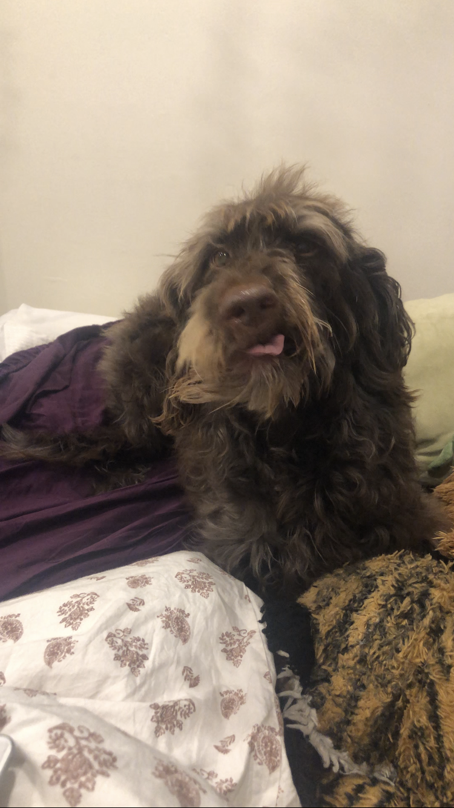

I have enjoyed crocheting for many years now. I like making tops and stuffed animals

Playing Music
I am in a band called Smoke Banned. I am on vocals however I can play the ukulele and keys and I am currently learning the guitar! I've made a song with chords but I've yet to recorded it.
Coding
I used to enjoy coding a lot more but now it's all I do for school
Drawing
I've been drawing since highschool (it was my main hobby back then). My typical drawing style is anime.
Listening to Music
I love listening to music. I especially enjoy doing it while walking my dog, Ziggy.
Reading
I love reading before bed. My favourite genre is fantasy-romance or romantasy if you will.
Sewing
I enjoy upcycling clothes. I have a sewing machine however I prefer sewing by hand. I want to sew a skirt soon.
Making Jewelry
Making friendship bracelets are my go to, but I also enjoy designing and making necklaces and earrings!
Learning alphabets
For sure one of my more random hobbies, but I enjoy learning obscure languages like morse code and brail. I also like incorperating them in my other hobbies i.e. adding morse code in a friendship bracelet for special meaning.
Knitting
This was my gateway into crocheting. I learnt it in grade 4 and while I practice this one less than my other hobbies, I still love the way the stitches look and will come back to it every once in a while.
Creating content
This hobby is vague for sure, after all this website falls under this umbrella. More than that, I enjoy making tik toks
Writing
Throughout Covid, I wrote a book with over 100,000 words! These days, my writing has taken form as lyrics for songs.
Painting
As expected of someone who enjoys drawing, I also enjoy painting. My favourite type of paint is watercolouring. I find the colours lighter and thus prettier for flowers and scenery.
Gaming
I feel like this one doesn't count as a hobby, but I love card games, board games, mobile games, online games etc. I never miss a day when it comes to octordle, qwordle, or any nytimes game. I suppose this would make sense from someone taking a games design minor though!